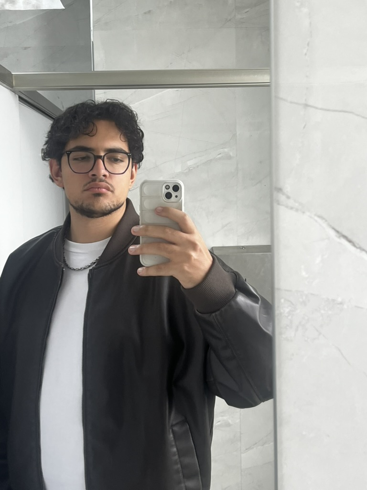
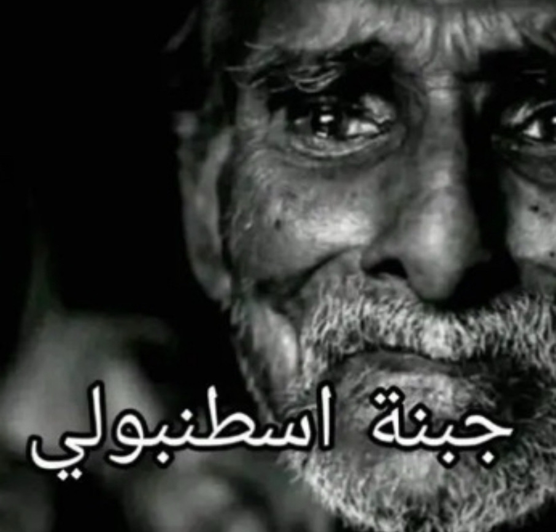

Home
About Me
Contact
Rizz Guide
Welcome to Ahmed's Official Rizz Guide!

Here is the step-by-step on pulling mad huzz like me (quick method):
1. Be tall like me (6'4 btw)
2. Lucious hair like me (curly head btw haha)
3. Be nonchalant like me (I don't care about anything)
4. Be funny like me (this one is important)
And finally, just be me bro that's the quickest way there fr look at ts

See what he's doing?
I knew this was gonna happen.
Ts lowkey smart.
But lowkey dangerous.